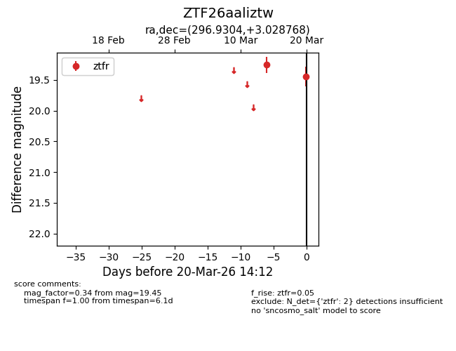
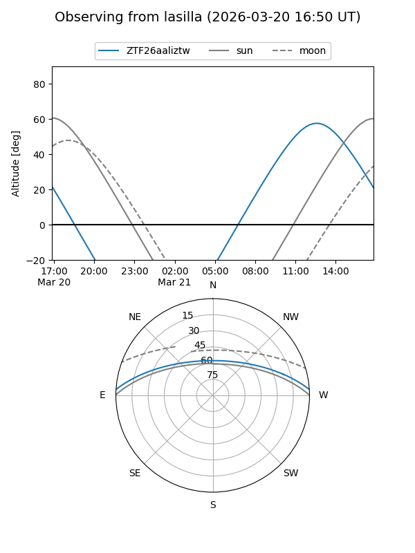
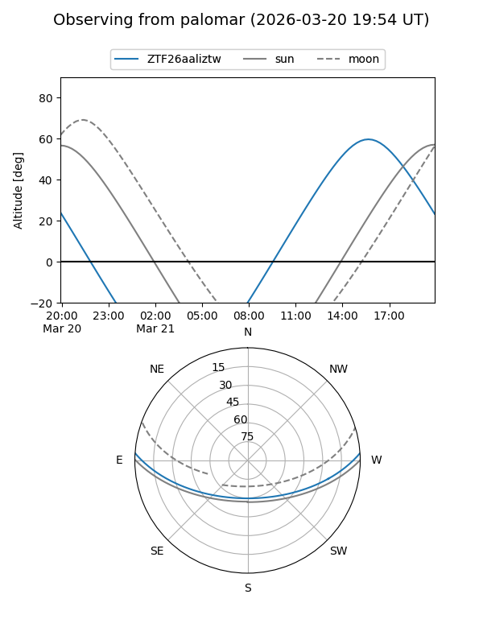

ZTF26aaliztw
Target ZTF26aaliztw at 2026-03-20 14:14
Aliases and brokers:
FINK: link
Lasair: link
ALeRCE: link
alt names
ZTF26aaliztw (ztf,fink_ztf)
Coordinates:
equatorial (ra, dec) = 296.9304,+3.02877
equatorial (HMS+DMS) = 19:47:43.30,+03:01:43.56
galactic (l, b) = (42.1806,-11.06844)
Flags:
Photometry:
last ztfr=19.45
2 ztfr detections
Lightcurve

Visibility


Additional plots